EDEN LEAF
Il primo ristorante Solarpunk

Il ristorante
Sospesi tra cielo e radici, vi accogliamo nella nostra biosfera di cristallo sulla Foglia Madre. Eden Leaf non è solo cucina gourmet, è un ecosistema pulsante dove l'alta tecnologia coltiva il sapore e ogni piatto racconta la storia vivente dell'albero che ci ospita.
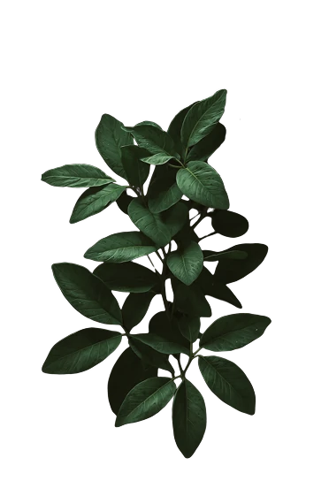
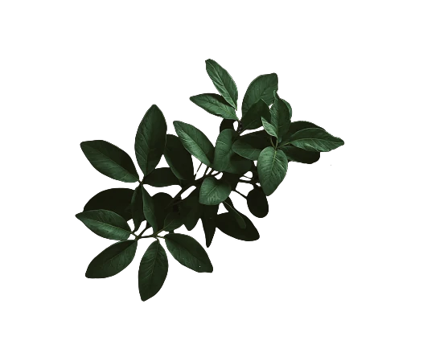
Raccogliamo germogli, frutti e linfa direttamente dai rami che circondano i vostri tavoli: una freschezza che non conosce trasporto.
Sensori bionici monitorano la salute delle piante in tempo reale, garantendo ingredienti puri senza mai forzare i ritmi della natura circostante.
La nostra cupola in vetro fotovoltaico cattura il sole per alimentare la cucina, rendendo ogni cottura un atto di energia pulita quotidiana.
Nulla si spreca: i nostri scarti organici vengono trasformati in nutrienti vitali per le radici del Grande Albero, in un ciclo armonioso.
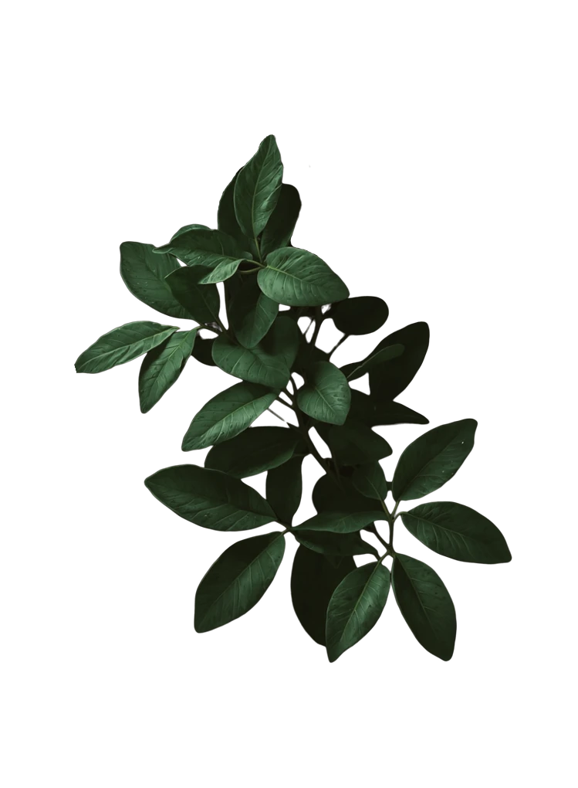
Raccogliamo germogli, frutti e linfa direttamente dai rami che circondano i vostri tavoli: una freschezza che non conosce trasporto.
Sensori bionici monitorano la salute delle piante in tempo reale, garantendo ingredienti puri senza mai forzare i ritmi della natura circostante.
La nostra cupola in vetro fotovoltaico cattura il sole per alimentare la cucina, rendendo ogni cottura un atto di energia pulita quotidiana.
Nulla si spreca: i nostri scarti organici vengono trasformati in nutrienti vitali per le radici del Grande Albero, in un ciclo armonioso.
Uno sguardo nel nostro ecosistema
Un'architettura trasparente che abbatte i confini tra voi e il tramonto. Esplorate gli angoli della nostra cupola, dove il design abbraccia la bellezza della natura sospesa.
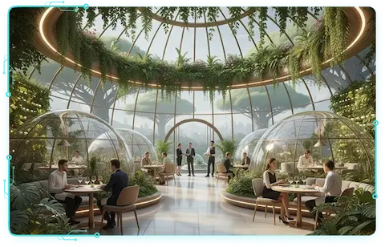
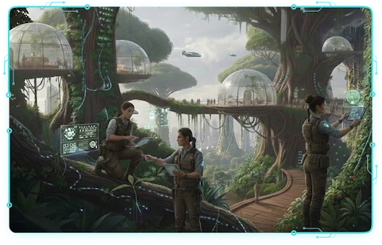
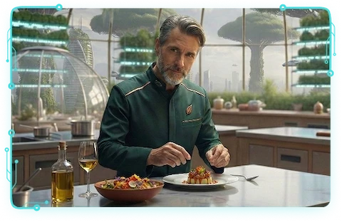
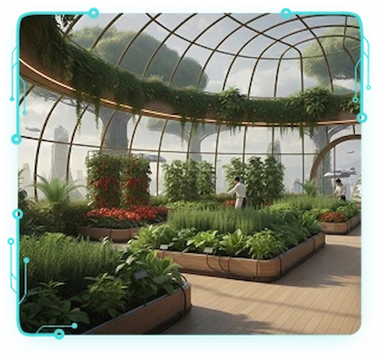
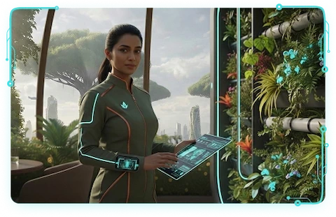
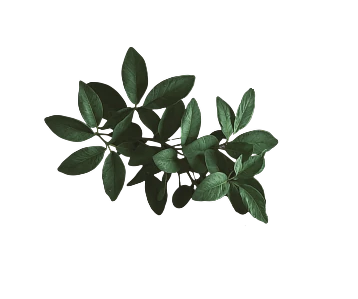

Alcuni dei nostri piatti


Alcuni dei nostri piatti
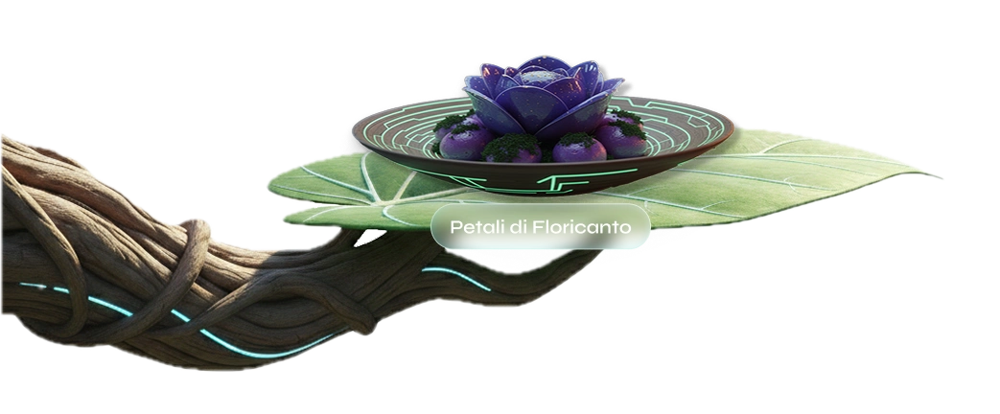
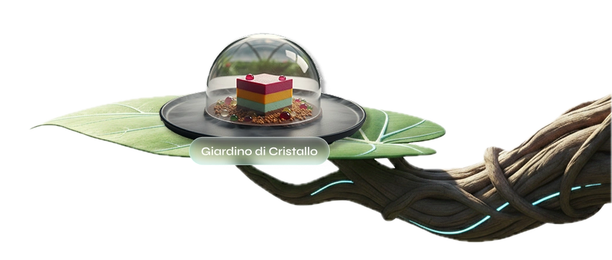
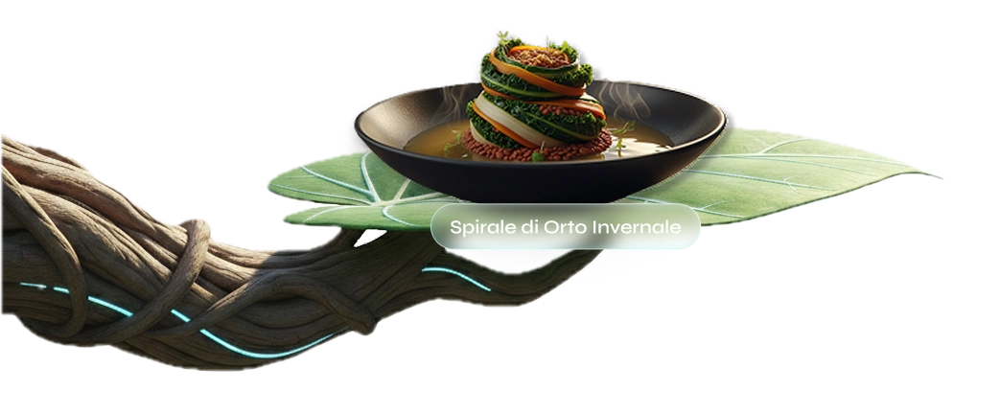
Dicono di noi

“Cenare a 50 metri d'altezza cambia la prospettiva. Il risotto brezza d’aria è commovente, un'esperienza che vale ogni centesimo.”

"Finalmente l'alta cucina incontra l'etica vera. Qui sopra il caos della città è solo un brutto ricordo, esiste solo armonia silenziosa."

"Tecnologia invisibile e sapori antichi. Un lusso sostenibile che non credevo possibile. Il servizio è fluido ed elegante, proprio come la linfa."

"Non è solo una cena, è il mondo che vogliamo. L'atmosfera nella cupola di vetro durante il temporale era pura magia, indimenticabile."
FAQ
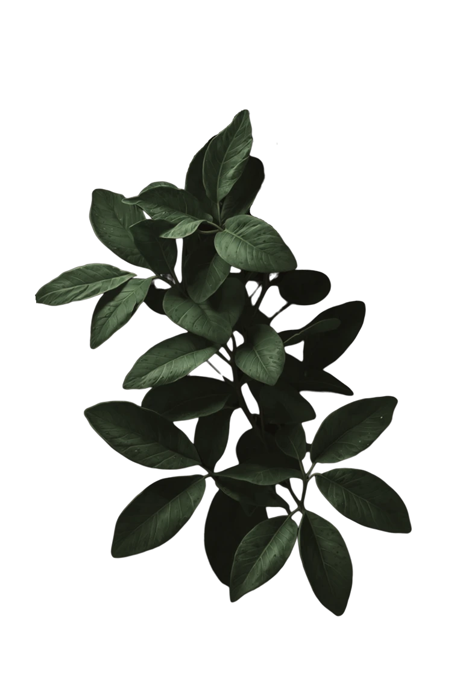
Prenota il tuo tavolo
I tavoli sulla Foglia Madre sono limitati per rispettare l'equilibrio della
struttura.
Assicuratevi ora il vostro angolo in paradiso.